VisualEyes
Finding what we are passionate about
Each member of the team wrote down one big idea and 3–4 keywords connected to the idea. We then shortlisted the area that interests us the most.
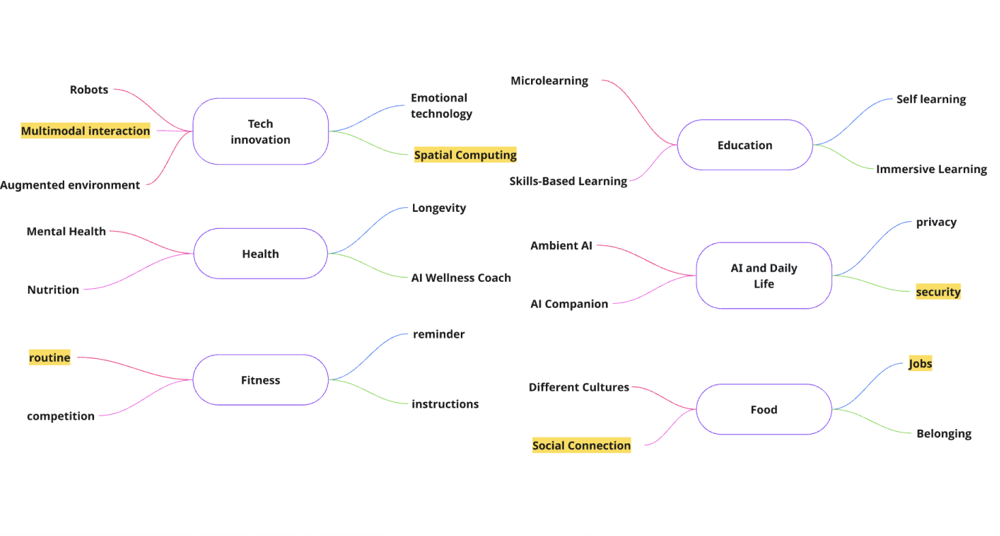
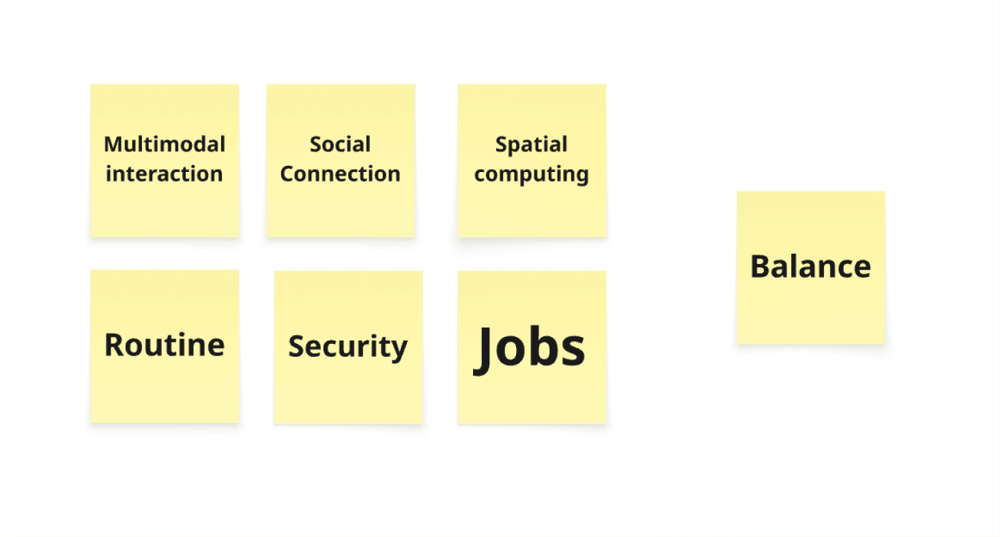
From Big Idea → Design Challenge
Balance emerged as a shared area of interest amongst our team. We then started thinking what balance is and what it meant to each of us. All 5 of us ended up having different answers to what balance is. Hence, we decided to keep our challenge broad in the beginning: to explore how people understand balance, what disrupts it and how an experience could help users reflect on it.
Finding what ‘Balance’ means to students
Our team brainstormed ~60 questions surrounding ‘Balance’ and eventually narrowed down to 10+ most important ones for the interviews. We also allocated some of the questions under each category below.
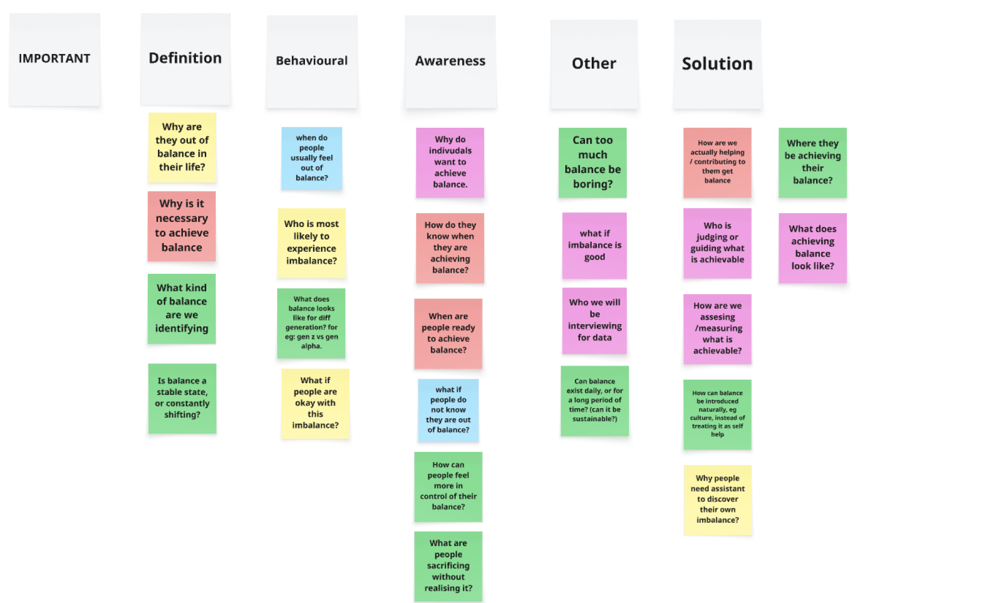
We conducted an initial group interview, and here are some of our observations:
- Every participant defined ‘balance’ differently.
- We should interview students of a different age range, for example late 20s, as they might offer a broader perspective over what balance means.
- Some participants are more reserved in a group setting, hence we conducted 1-1 interviews after.
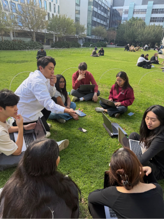
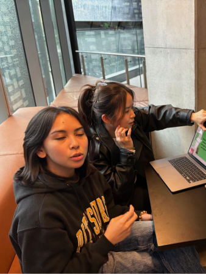
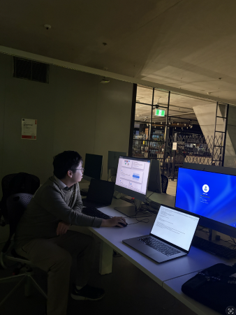
Key Findings
01
Balance means different things to different people
02
Students often chase goals shaped by external expectations
03
Reflection usually happens too late
Student archetypes
The High-Achieving Drifter
He’s doing everything he’s supposed to do, but he is not sure if that is actually what he wants. He also often felt pressure from family, peers and expectations.
Needs: A way to pause and question whether their ambition is personally meaningful.
The Uncertain Explorer
She often feels overwhelmed by choices and unsure of what fits. She has so many possibilities, but she doesn’t know which one is right for her.
Needs: A low-pressure way to explore different futures.
The Practical Planner
She wants a secure future, but she’s fearful of missing out on what matters and losing herself in the process.
Needs: Clarity on the trade-offs behind what they are building.
Reframing our challenge
Our research shows that balance can’t be a fixed outcome for everyone. Since everyone defined balance differently, our opportunity here is NOT to define balance for them. Instead, the biggest opportunity is to allow them to visualise their own version of balance.
We first diverged, then converged on the strongest direction
As a group, we brainstormed ~30 ideas, removed the duplicated ones and grouped them according to how creative and aligned they are with respect to our refined challenge statement.
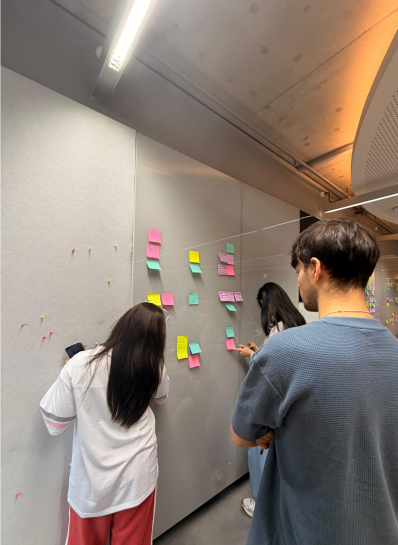
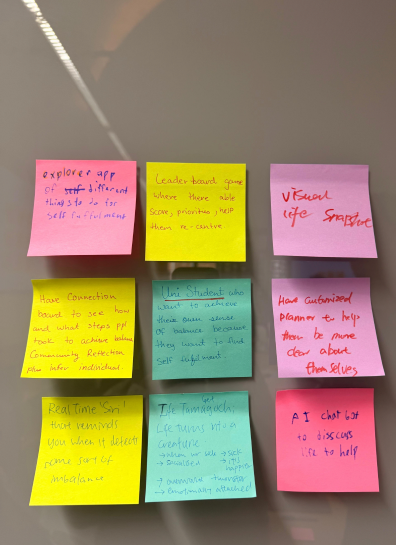
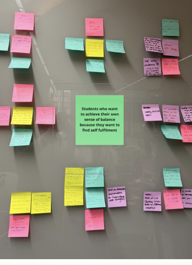
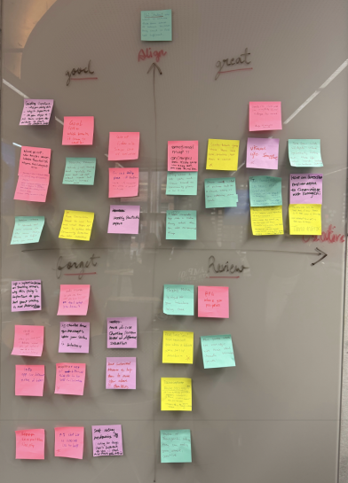
We evaluated each idea based on 3 criteria:
- how well it supports authentic self-alignment
- how effectively it used the immersive qualities of Apple Vision Pro
- if it could create a meaningful moment of reflection for students
The strongest direction was not another productivity tool or advice app, but an experience that could make a possible future feel visible. This led us to the idea of an immersive future-self world, where users could step inside a version of the life they are working towards and reflect whether it truly feels aligned.
Introducing VisualEyes
VisualEyes is a Vision Pro immersive app where users explore possible versions of their future self. Instead of asking them to reflect using text, VisualEyes guides users through a set of quizzes to understand what they want, what they do not want, who they are, and what they are not willing to sacrifice. Those responses are transformed into an immersive world where users could step into a possible version of their future self.
How VisualEyes works
The experience in 4 steps
Answer
Student answers questions about their values
Generate
AI builds a 3D world that matches their values and goals
Explore
User explores their future self in the immersive world
Reflect
Reflects if it is truly aligned to what they want
Low-Fidelity
VisualEyes is a Vision Pro experience that helps users explore possible versions of their future self. Rather than asking users to reflect through text alone, the experience guides them through a short quiz about what they want, what they do not want, and what they are unwilling to sacrifice. These responses are then transformed into an immersive world they can step into and reflect on.
Intro screen
We wanted to keep our intro screen simple & game-like in style.
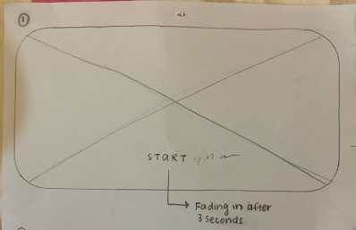
Simple entry point — A single start button reduced friction, but did not support returning users.
Returning users should not have to repeat the full quiz each time they revisit.
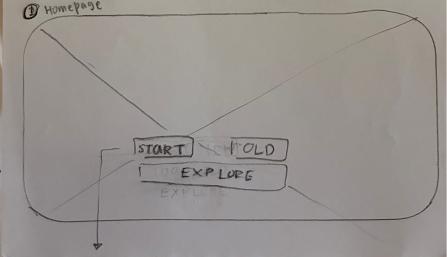
Start new / Revisit — We added a returning option so users could access an existing generated world without repeating onboarding.
Safety Declaration
In VR, safety goes beyond data protection. Because immersive experiences can affect users physically and emotionally, we have the responsibility to warn users about potential risks, such as dizziness or emotional overwhelm, before they enter the experience.
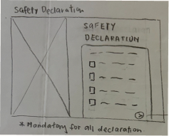
We initially placed safety information beside a world preview.
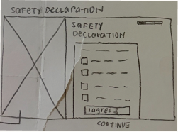
Progress indicator — Explored showing progress so users knew how many setup steps remained. Learning: a progress bar creates friction and made the flow feel longer than necessary.
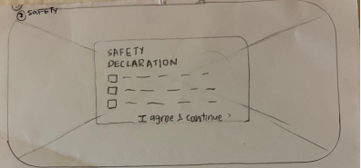
Single pop-up — We kept the safety notice as a single pop-up to make the warning short and clear.
Privacy Preferences
We want to let users control what kind of data they allow us to store — data such as profile, interaction, movement and body data.
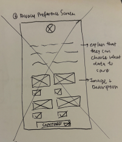
Visual categories — Used icon images to explain different kinds of stored data. Learning: icons added visual noise; direct text might be easier to understand.
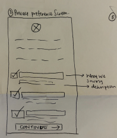
Replaced images and icons with text.
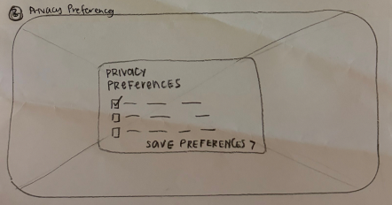
Consistent pop-up visual — Reused the same layout so it looks like part of the same setup flow.
3D World & Gen AI Experiments
Although the quiz appears before the world in the final outcome, our process started by working backwards to understand what kind of immersive environment would be meaningful.
Key questions we explored
- How users move and control inside 3D spaces
- What type of world should be generated
- What input type produces the clearest personalised output
Experiment 1 · Navigating the 3D Space (Keyboard vs console input)
Method 1 · Keyboard (← → ↑ ↓)
Method 2 · Console
Experiment 2 · Testing which world is better (AI generated vs Preset 3D world)
Preset 3D world
Felt personalised but less consistent.
AI generated world
Clearer and more controlled, but felt less personal.
Experiment 3 · Input Type Testing (MCQ vs rating vs open ended)
MCQ input
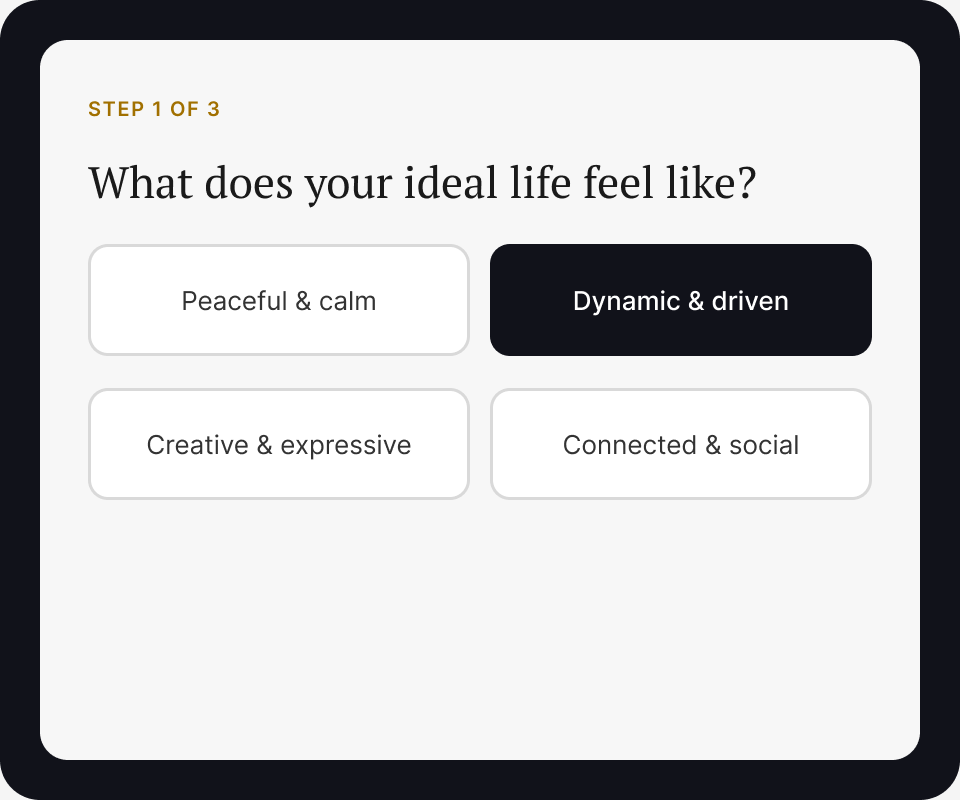
MCQ inputs created generic, predictable outputs.
Rating style input
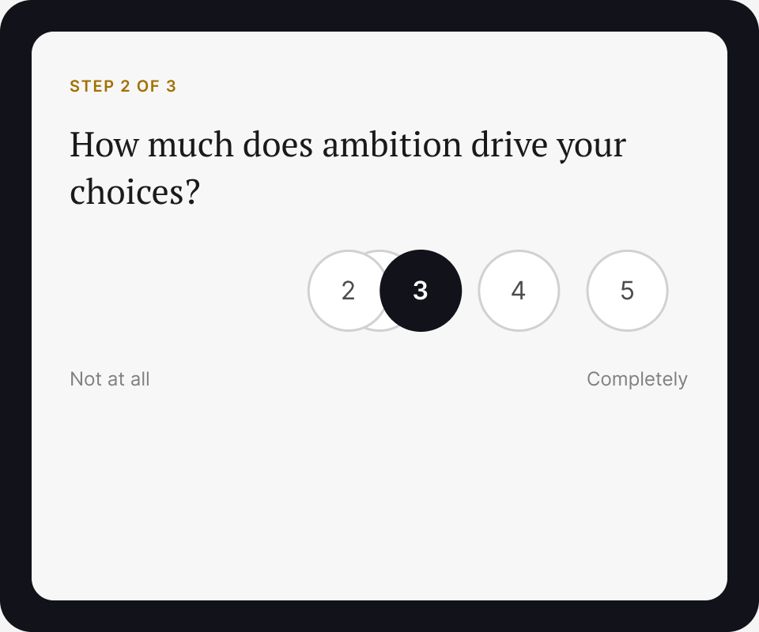
Rating scales were hard to interpret — without context, a number like '3' or '4' tells us very little.
Open ended voice input
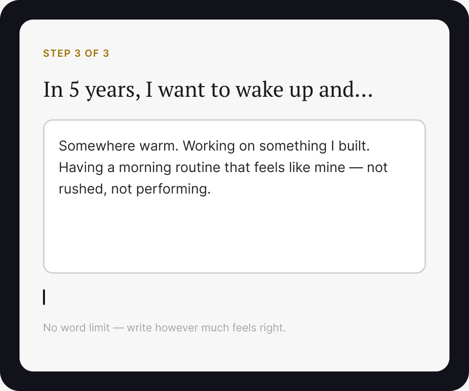
Open-ended inputs produced stronger, more personalised narratives.
Designing the inputs behind the experience
Each quiz question was mapped to a placeholder in the AI prompt template. Colours show the connection.
AI Prompt Template
"Imagine you are a 26-year-old living in Melbourne. You see yourself as a creative who thrives in chaos but craves stability. In your ideal future, you are leading a small design studio, working remotely from different cities. The main thing stopping you from getting there is the fear of taking the first real step. The one thing you refuse to sacrifice is your sense of autonomy."
* This is a simplified example for illustration purposes — not the actual prompt used in the project.
User context
How old are you, where do you live?
Current identity
How would you describe your current self?
Future aspiration
What does your ideal future look like?
Main conflict
What is standing between you and that future?
Non-negotiable value
What are you least willing to give up?
Final World Generation Approach
Drawing from all three experiments, this is the framework we committed to — combining the clarity of preset 3D worlds, MCQ for quick factual inputs, and open-ended questions for richer personal narratives.
How it all comes together
A hero-story prompt framework
Prompt template with placeholders
MCQ for quick, factual inputs (e.g. age, location)
Open-ended questions for personal narrative inputs (primary input: voice input)
User answers fill the prompt template
AI generates personalised images and story, placed within a preset 3D world
User navigates the world using a console
Final Low-Fi Flow
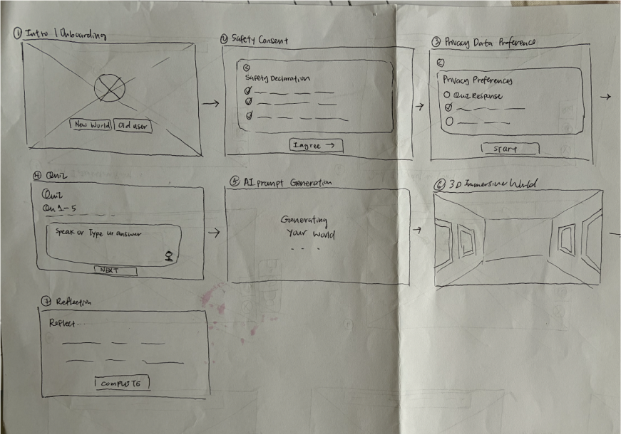
High-Fidelity Prototype
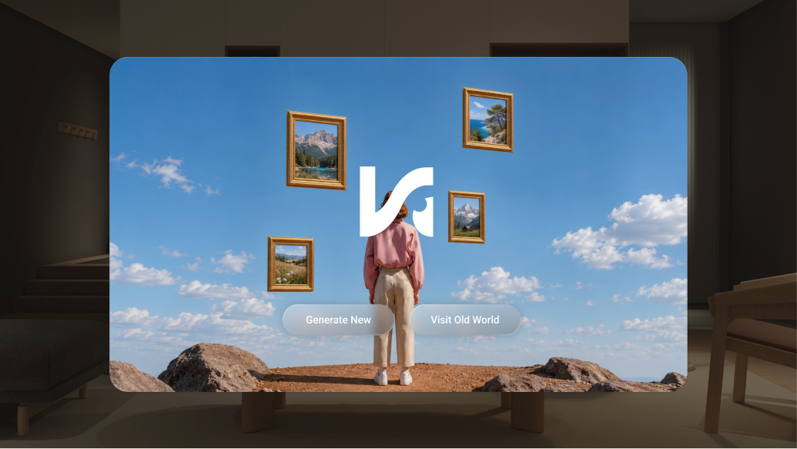
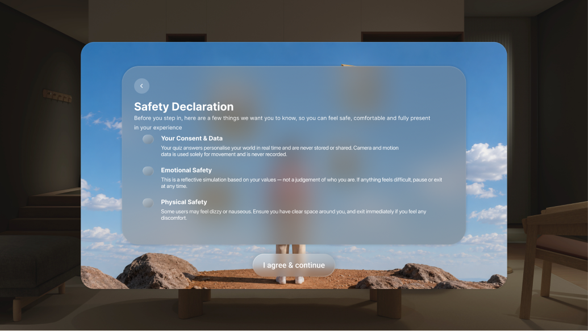
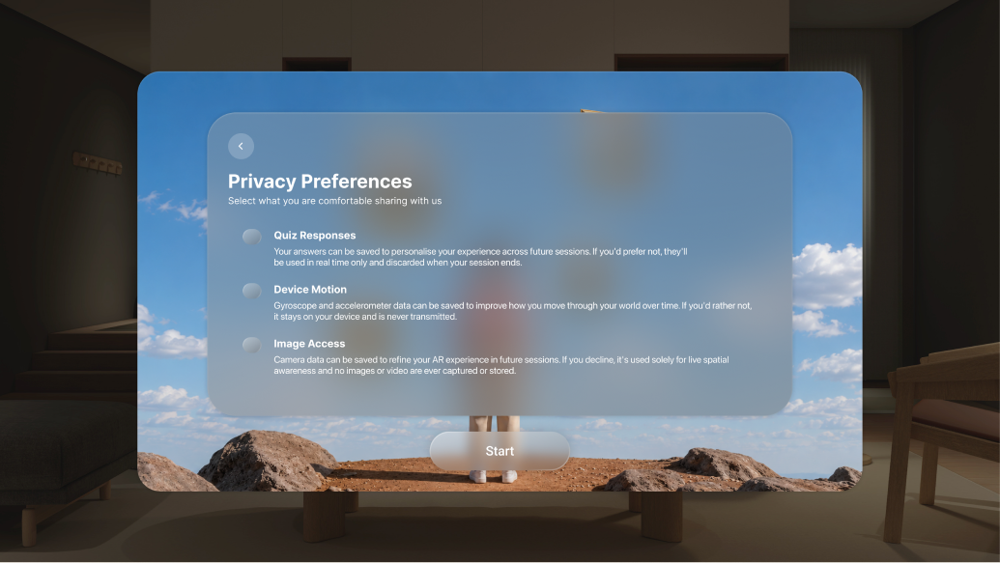
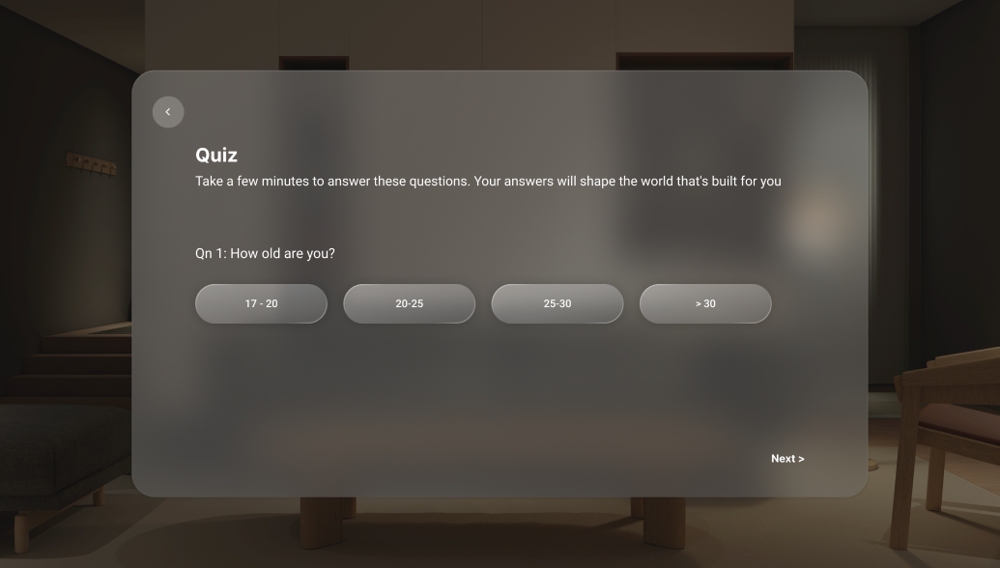
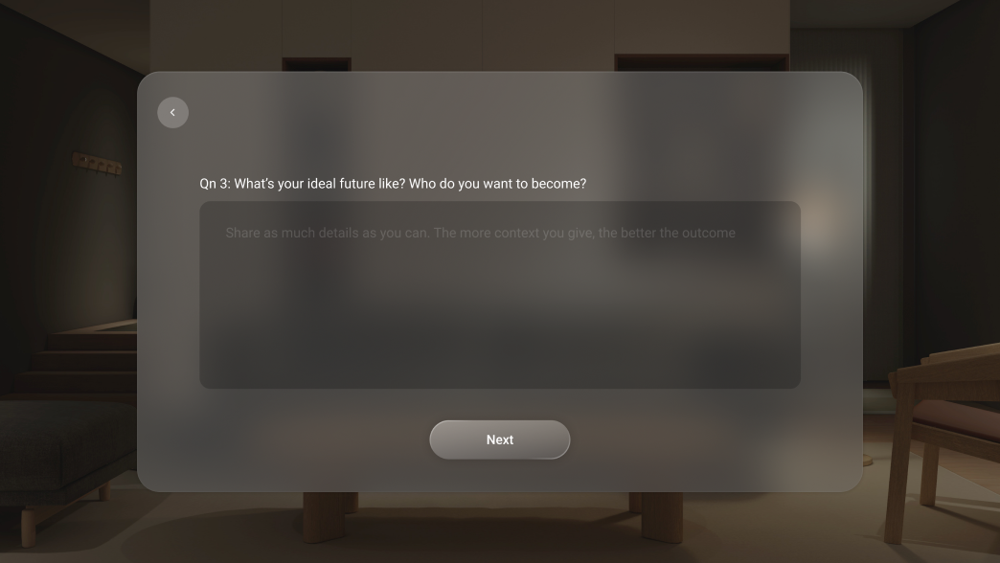
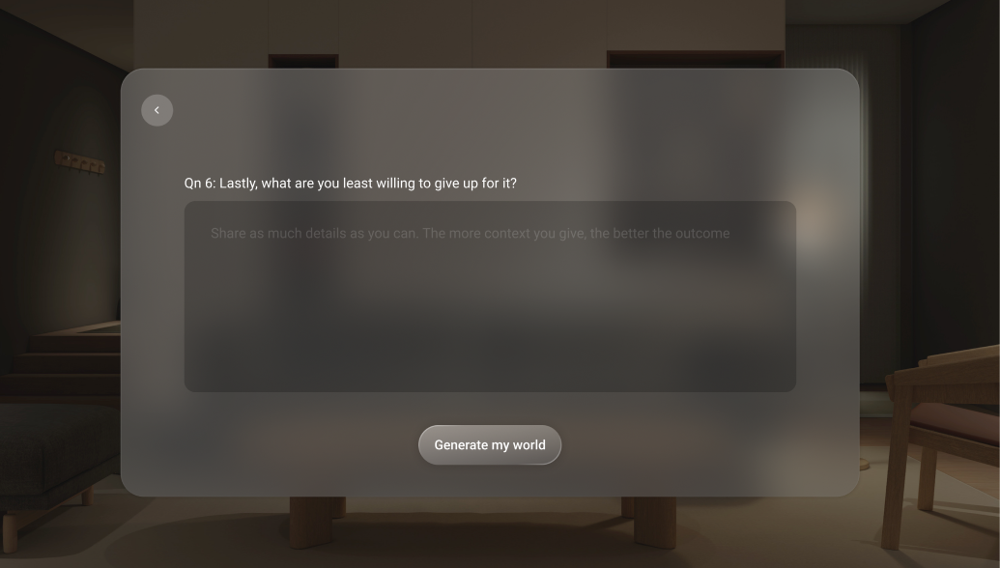
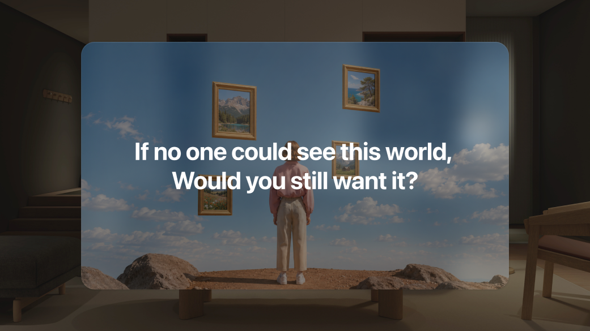
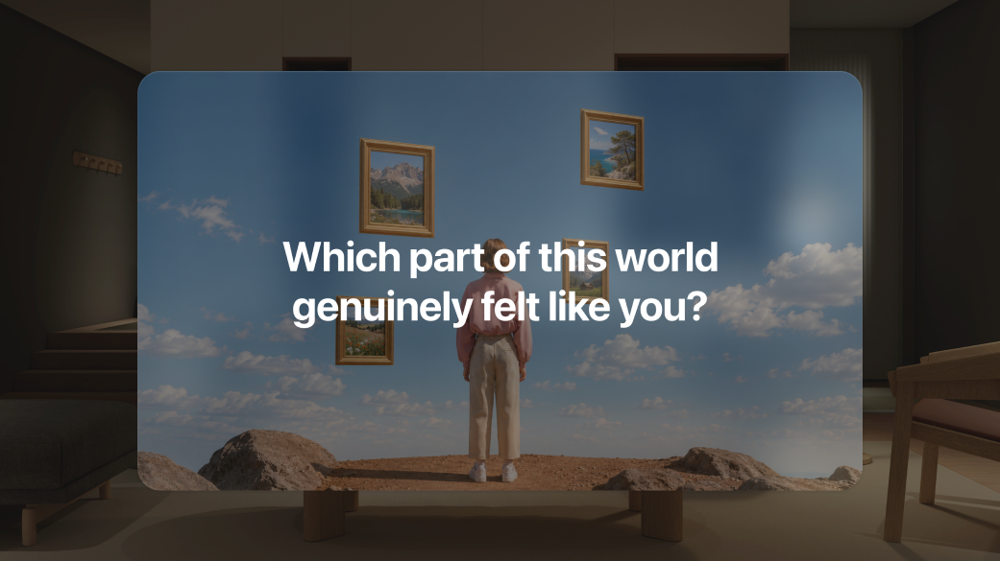
Gathering feedbacks from peers and tutors!
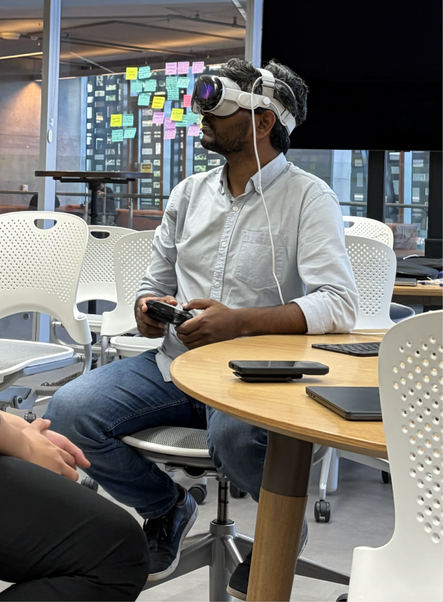
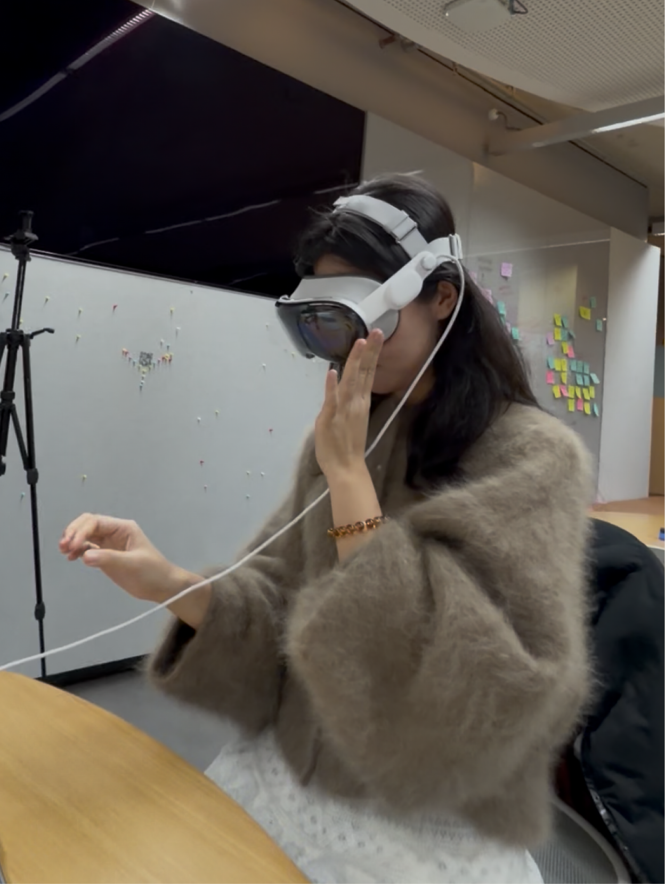
What we tested
Whether users understood the entire flow, felt safe, and found the personalised world meaningful.
What we learned
Users found it challenging to click certain buttons at times. The reflection ending needed to feel calm rather than like another task.
What we changed
We enlarged all the buttons and placed them within a clearly defined container for ease of interaction. We also replaced the written reflection with rhetorical prompts, allowing users to reflect internally.
Designing for 3D
Designing for 3D required us to consider not only the interface and UX, but also movement, interaction, spatial clarity and user comfort.
Safety & security
Safety and security became one of the key design considerations throughout the project.
World-building is product design
Designing an immersive 3D experience taught me that the environment, pacing, and interaction model are all product decisions — not just aesthetic ones.